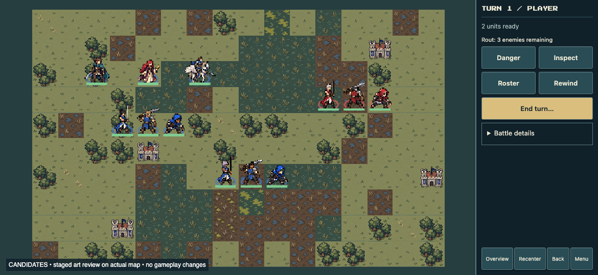

Next player set: Archer, Mage, Cleric, Fighter, Knight
Nine new samples: two player appearances and one enemy for Myrmidon, Mercenary and Thief. Edric, Sera and Pegasus Knight remain unchanged as anchors.
Sprite-development principles · Original generation prompts · Latest blade prompt and placement · Previous review
Left-to-right within each group: Myrmidon · Mercenary · Thief. Player A is middle-left; Player B is lower-middle; enemies are upper-right.

Blade width, length and direction now form a three-part class cue. Bright steel should remain bounded by a dark contour; no glow. Compare current and previous views at the same size.
These remain static art samples. Live acted state, fog, range overlays and animations remain unverified.
Each thumbnail is the actual 64×64 texture, containing roughly 30–34px-tall artwork. No zoom applied here.
Separate actors from the ground using value and contour; make weapon/stance/cloth shape carry class recognition; retain faction cues when range overlays turn the ground blue; put fine identity details behind readable shapes. These are art-direction hypotheses, not a claim of measured recognition accuracy.